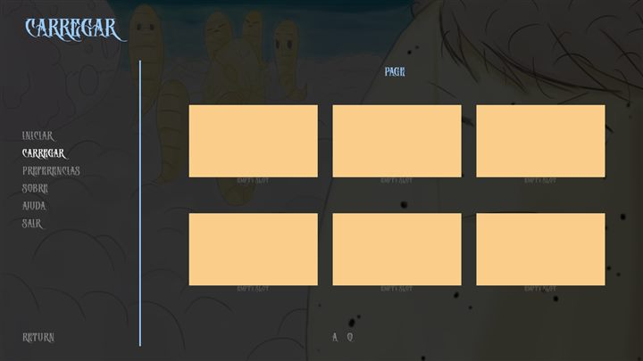
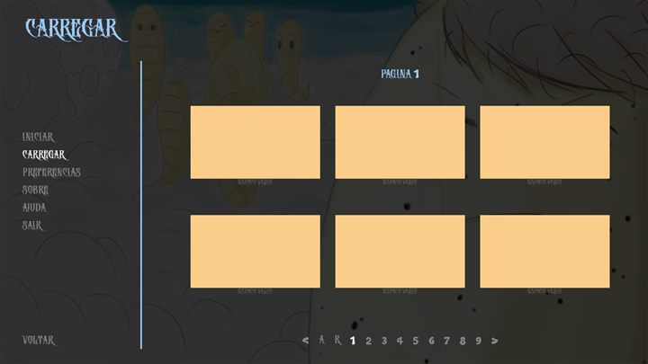
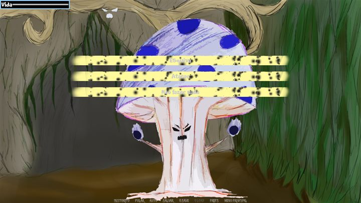
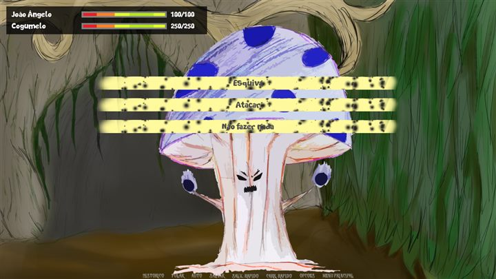

Onde o jogo está, o que pode começar agora e o que cada entrega libera. As fatias vêm da auditoria de novembro de 2026 e do plano para levar a história de Potatoesvill a um jogo de ação e aventura em 2D. Cada fatia traz um prompt pronto para você entregar ao Claude.
Do jeito que estava no GitHub, o jogo não abria. Os 25 defeitos abaixo foram consertados e conferidos com testes automatizados. Dos 12 pontos em aberto, 10 já foram resolvidos, a pedido seu. Restam 2, que dependem de uma escolha sua.




Cada marco conta as suas fatias e tudo de que elas dependem. “Faltam” lista o que ainda não está concluído.
“Pronta” significa que todas as dependências entre fatias estão concluídas. O que depende de você aparece como aviso.
As colunas, da esquerda para a direita, seguem a ordem possível. Clique numa fatia para ver em azul o que ela precisa e em laranja o que ela libera.
| Fatia | Tipo · modelo | Estado | Depende de | Libera | Prompt |
|---|
Cada fatia iniciada ganha uma ficha com plano e perguntas, listada aqui.